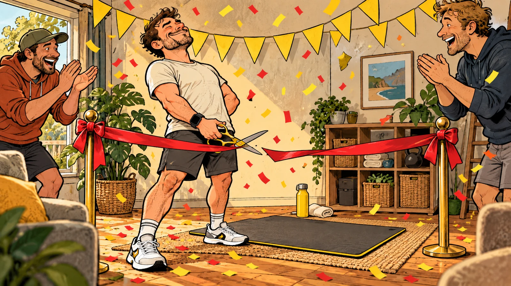

Give it to the mate who returns a drill without the charger. The brother whose leftovers have survived two governments. The partner who says “nearly done” from inside a wall. These proposed chapters give a few familiar habits a proper roasting, with enough affection that he might still lend you the book afterwards.
A taste of the rough stuff
New picture concepts in development. A familiar habit, a visual joke and a useful little nudge.

The Gym Opening Ceremony · New AI illustration concept01
The Date Commentary Channel
He has explained his job, his old car, his new car and the correct way to reverse a trailer.
Strong opening. Now find out her name.
Picture idea: Two adults on a casual date; one man’s speech bubble has become an enormous map of unrelated stories while his date patiently holds a small question mark.
Concept in development
02
Dad Packed the Bag
Drinks, snacks, wipes, hat. He proudly announces everything is ready.
Good start. Where’s the child?
Picture idea: An elaborately prepared parent stands beside a packed day bag while the child waits calmly in the doorway holding the missing shoes.
Concept in development
03
The Gym Opening Ceremony
New shoes. New watch. New bottle. An inspirational announcement.
Tomorrow’s workout still needs you to turn up.
Picture idea: A man cuts a ceremonial ribbon in front of a single exercise mat while a calendar quietly displays the following day.
Concept in development
The Five-Minute Job Needs a Site Office
He went in to tighten a cupboard handle. The door is off, the contents are on the floor and he’s explaining why the whole kitchen was badly designed anyway. There are now three hardware receipts and no available bench space. This chapter is for the enthusiastic starter whose family would quite like to see him finish something.
“While I’m here” is how a loose screw becomes a renovation.
The instruction sheet is currently protecting the bench from his coffee.
He’s saved forty dollars. The household has lost Saturday.
Picture brief for this chapter
A man stands proudly beside a cupboard stripped into dozens of parts. His partner holds one loose handle, and a tiny site office has appeared at the end of the kitchen bench.
The Fridge Witness Protection Program
Every container has a lid. Very few have an explanation. He lifts one, says “still smells alright” and promptly asks if anyone wants takeaway. The comedy lives in the leftovers he keeps out of principle, the sauce bottles with one teaspoon left and the empty milk carton thoughtfully returned to the shelf. A clean-out would answer several household questions.
“That’s from Tuesday.” Which Tuesday has been referred to the archives.
The good container has been missing since the curry incident.
Putting an empty carton back is a very small act of warfare.
Picture brief for this chapter
A man peers into a fridge full of identical tubs. Several wear tiny disguises, while a family member holds the missing container’s lid like a detective displaying evidence.
The Apology Has Footnotes
He’s sorry, obviously. First he needs twelve minutes to establish the weather, the traffic, the quality of the signage and what his mate would have done. By the time he reaches “but”, everyone has forgotten the original offence. These pages follow the heroic effort involved in saying a simple thing without turning it into an appeal hearing.
“I’m sorry you took it that way” has arrived wearing a fake moustache.
His explanation now needs a whiteboard and a second witness.
Try “I stuffed that up.” There’s still time to enjoy the afternoon.
Picture brief for this chapter
Different adults sit around a backyard table while an apologising man presents an absurdly long flowchart. A small card reading “Sorry. My fault.” waits unused beside his elbow.
The Borrowed Drill Has Changed Families
A mate lent him a drill for the weekend. It now has a regular parking spot, a preferred shelf and possibly voting rights at his place. Meanwhile the owner has bought another one. This chapter collects the missing chargers, blunt blades and mysterious accessories that make lending a tool feel like sponsoring a very expensive exchange student.
“Just finishing with it” is entering its third financial year.
He returned the case. A bold opening offer.
A borrowed mower should come home with fewer problems than it left with.
Picture brief for this chapter
A borrowed drill poses in a framed family photo in a man’s shed. Outside, its original owner waits with an empty case and an increasingly patient expression.
The Sideline Has a New National Coach
It’s an under-tens game at the suburban oval or the country rec ground. He’s arrived with tactical concerns normally reserved for a World Cup final. His child is more interested in the orange slices. These pages find the point where enthusiastic support becomes a full broadcast, complete with disputed decisions and an audience trying to watch their own kids.
The coach has a plan. Apparently Dad has a louder one.
His match analysis lasted longer than the match.
The kid asked for a lift home, not a performance review.
Picture brief for this chapter
Several parents watch a small junior sports game. One dad has unfolded a giant tactics board beside the esky while his child offers him an orange slice and a quiet seat.